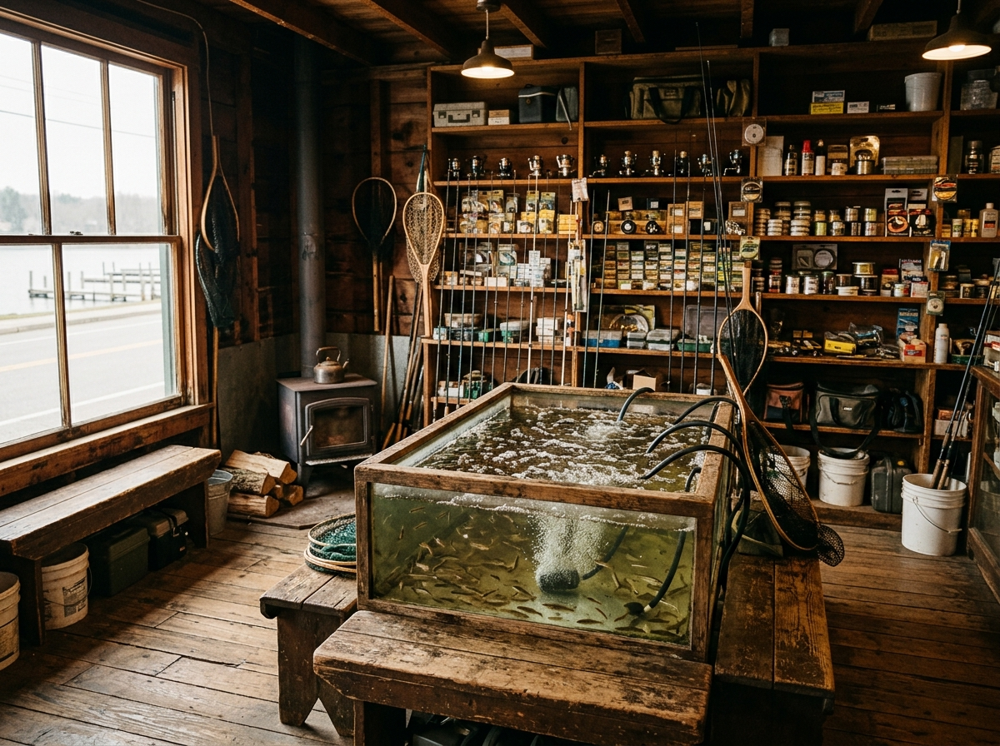
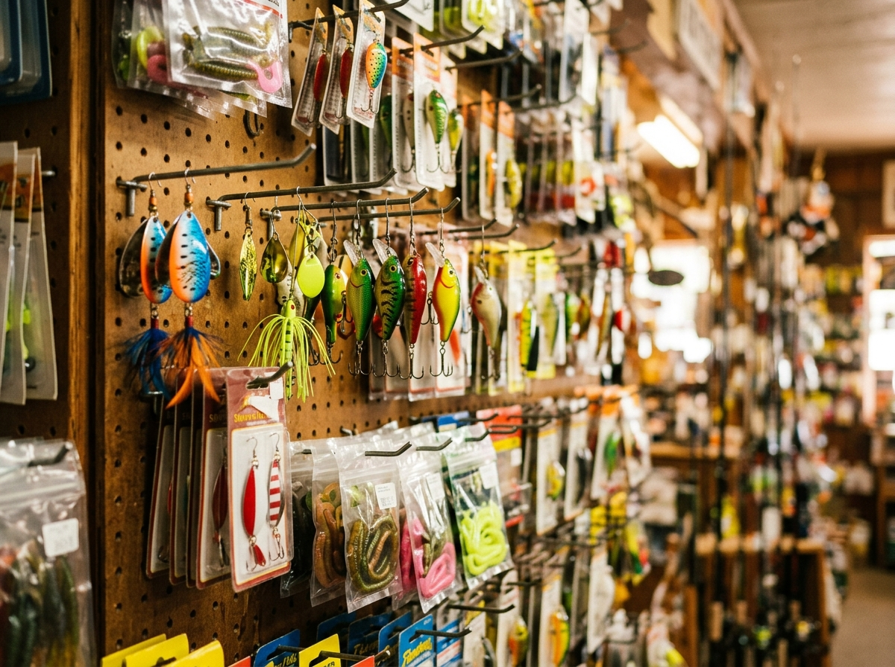
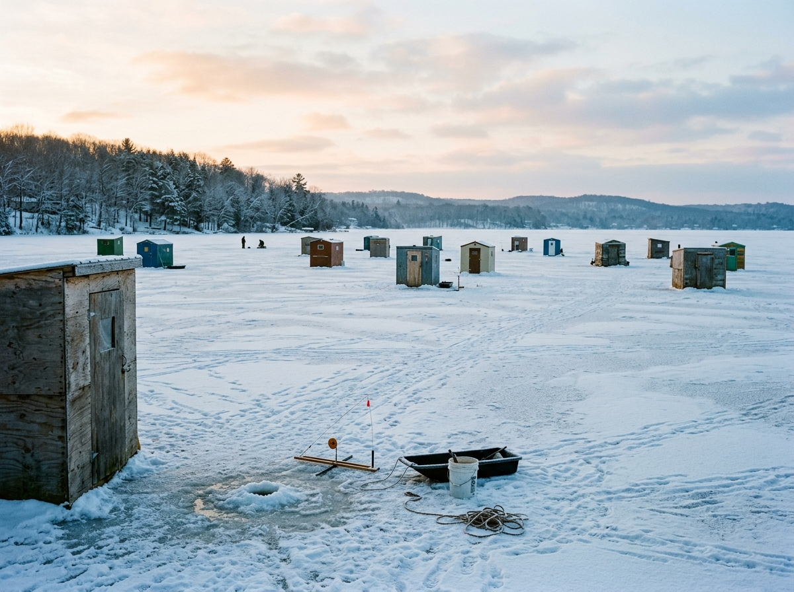

Fresh, lively, and dipped generously — the bait board below is straight from the shop's own "Fresh Bait Friday" updates.
Stock straight from the shop's Fresh Bait Friday posts — what's in the tanks varies with the season; call to confirm today's stock.
The tackle wall
A good selection of year-round lures and tackle for the 101 lakes out the door — panfish jigs to bass baits, plus the hooks, weights, line and terminal tackle that always seem to run out mid-trip.

December through ice-out
Every December the shop loads up with a huge ice-fishing selection — and the local hard-water crowd knows it. Crooked Lake ice fishing is a Steuben County tradition; gear up here first.
Where the ice bite is
The regulars
"Great selection of bait, tackle and fishing supplies in a small location. They also have tons of archery equipment as well. Staff were very friendly and helpful."
"They have all the supplies you need to fish. Worms, bee-moths, leeches, minnows, shiners, suckers, and plenty of hooks, weights, and all kinds of tackle. Great shop!"